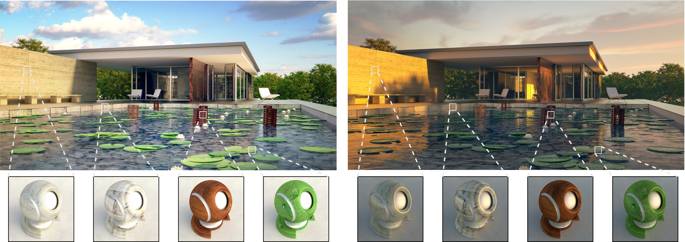

SIGGRAPH Asia 2019, Technical Briefs (In review)
Aakash KT1, Parikshit Sakurikar1, Saurabh Saini1, P J Narayanan11CVIT, IIIT Hyderabad

Abstract
Photo realism in computer generated imagery is crucially dependent on how well an artist is able to recreate real-world materials in the scene. The workflow for material modeling and editing typically involves manual tweaking of material parameters and uses a standard path tracing engine for visual feedback. A lot of time may be spent in iterative selection and rendering of materials at an appropriate quality. In this work, we propose a convolutional neural network based workflow which quickly generates high-quality ray traced material visualizations on a shaderball. Our novel architecture allows for control over environment lighting and assists material selection along with the ability to render spatially-varying materials. Additionally, our network enables control over environment lighting which gives an artist more freedom and provides better visualization of the rendered material. Comparison with state-of-the-art denoising and neural rendering techniques suggests that our neural renderer performs faster and better. We provide a interactive visualization tool and release our training dataset to foster further research in this area.
Acknowledgements
We thank all the reviewers of SIGGRAPH Asia 2019, for their valuable comments and suggestions.